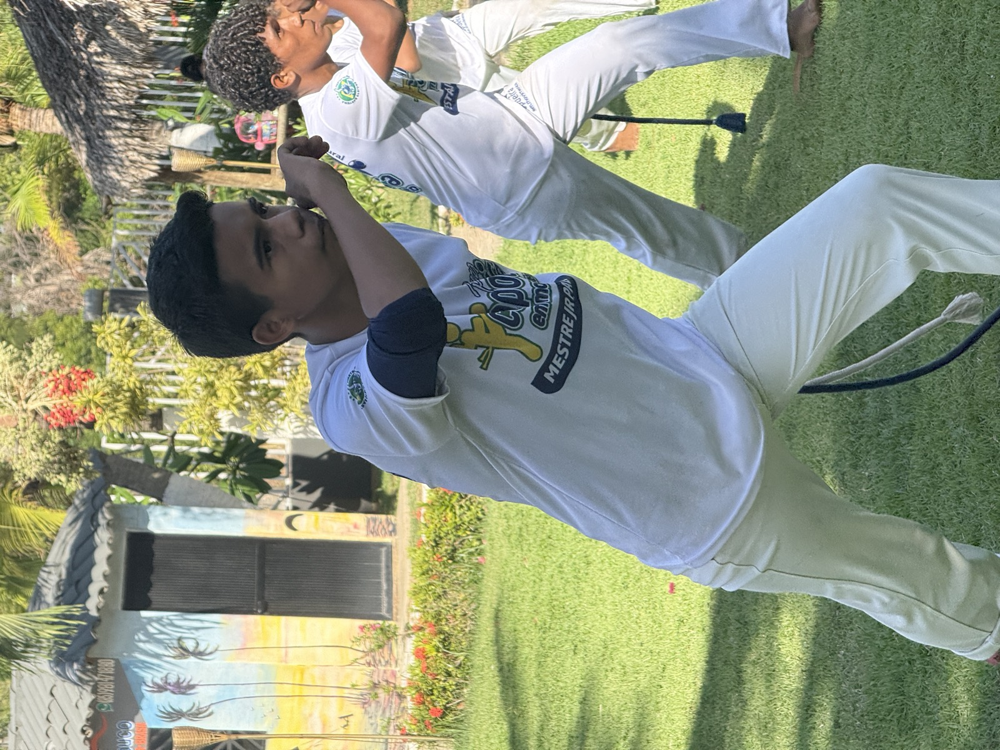

El Grupo
Una escuela de capoeira conectada por cultura, disciplina, música y comunidad.

Capoeira como camino de formación.
Pura Capoeira nace como una comunidad dedicada a vivir la capoeira de forma completa: como lucha, arte, música, historia, cultura y camino de formación personal.
La escuela reúne profesores, instructores, alumnos y núcleos de entrenamiento en diferentes ciudades, manteniendo una base común de respeto, disciplina, musicalidad y fundamento.
"La capoeira se transmite en la roda, en el entrenamiento, en el canto, en el toque del berimbau y en la convivencia entre generaciones."
Por eso, Pura Capoeira no se limita a enseñar movimientos: busca formar capoeiristas con conciencia corporal, musical, cultural e histórica.
Los pilares
de Pura Capoeira
Ocho principios que guían nuestra práctica dentro y fuera de la roda.
Disciplina
Constancia, presencia y compromiso con la práctica.
Respeito
Hacia el maestro, hacia el compañero, hacia la historia.
Musicalidade
Berimbau, canto y ritmo: el corazón de la roda.
Cultura afrobrasileña
Memoria viva, raíces y tradición.
Comunidade
Capoeira no se vive solo: se vive con otros.
Movimento
Cuerpo consciente, fluido y fuerte.
Estratégia
El jogo es diálogo, inteligencia y malicia.
Fundamento
Lo que sostiene todo: tradición, ética y sentido.
Formar capoeiristas, no solo practicantes.
Formar capoeiristas capaces de jogar, cantar, tocar, comprender la historia y representar la capoeira con respeto dentro y fuera de la roda.
Trabajamos con alumnos de todas las edades —kids, adolescentes, jóvenes y adultos— para construir una práctica que dura toda la vida.